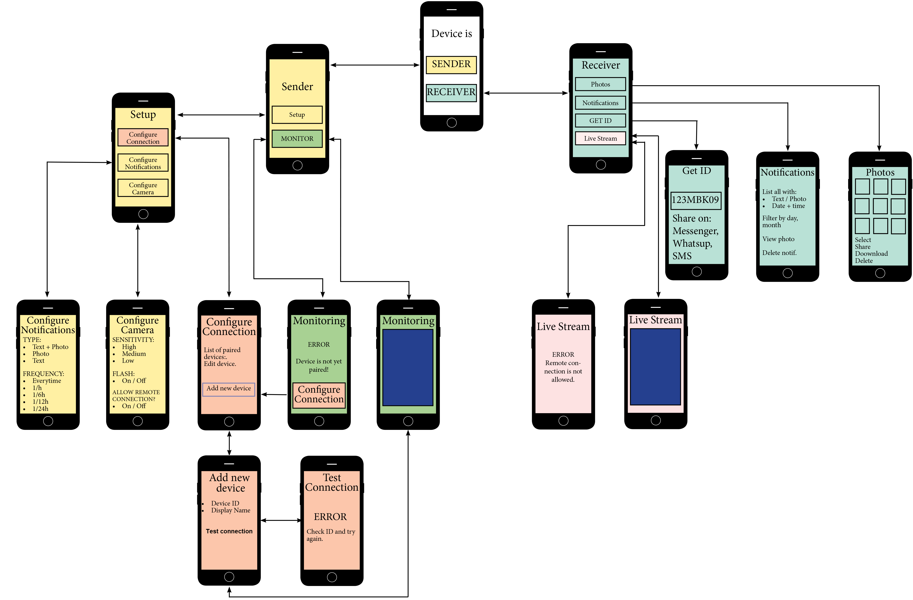

The Client
Peekaboo wants to join the home surveillance market as the most affordable, versatile and easy to use monitoring system.
They want to build a mobile app that offers a more
The Concept
Have you ever been away from home, but wondered what your pet is up to? You can easily find this out with Peekaboo.
Peekaboo is a paired mobile app that, on one hand, will enable your mobile device’s video camera to sense movement and on the other hand, allow you to see what is happening in its range, from a remote location. Its notification service works economically in your favour,
It can be installed on any Android/ IOS / Windows Phone 10 (or higher) mobile device.
The Competition
There are apps and systems on the market that check some of the functionalities of Peekaboo, but not all of them at once.
For example, Skype has an auto-answer option, so you can video call anytime from another mobile device and this way you create a remote connection and can see the live video stream through the camera of the monitoring device. But it
TeamViewer provides full remote control from another device, but the
Alfred Systems Inc is the main competitor. This app has almost all of the functionalities provided by Peekaboo: motion detection notification system with photos, remote connection, management of received photos and notifications, an easy pairing mechanism, using only the user’s Gmail address which is entered on both devices during setup. However, this exact simplicity
Peekaboo addresses this limitation and makes it possible, in an easy way, to pair multiple devices at the same time. This way, all of the devices will be notified at once when motion is sensed.
Target Audience
The idea comes mainly in support of the
Other categories of people could find different benefits from using the app as well:
- Cautious people that are
- Because the app works only when there’s movement, this will make it attractive to
- The app can also come to the aid of
PERSONA
Helen & Tom
27 & 31 years old
They are a couple working in advertising. They own a cat, Figaro.
They love traveling but hate leaving their cat at home, alone. They can’t always bring him along, as Figaro is not very pleased to be taken out of his home that often. But every time they are away, they are very concerned and would like to know that he’s ok. This would give them comfort and help them enjoy their vacation better.
A typical home surveillance system does not fit their needs entirely. Cats can stay for a long time hidden in different parts of the house and only pass by every so often. It’s a slight chance that at those exact moments, they are connected remotely to see him in range.
Organising the information
In order to articulate and structure the goals of the app, I first identified the correct functional requirements, that respond directly to the user and client needs.
The app has to work interchangeably as a
As a monitoring tool:
- The app provides a setup through which the user creates the
- The app will then make use of the mobile device’s camera to
- The setup will also allow the user to
As a remote access point:
- the user can establish a
- It saves and provides a
SITEMAP
While developing the logic of the app, I also worked on the look and feel of it.

WIREFRAMES
For the first step into the visual grounds of the product, I used Balsamiq tool to create the wireframes and lay out the structure and hierarchy of the information I had outlined in previous steps.
The wireframes (or the visual answer to “what goes where and why?”) of the monitoring tool is shown below.
Final Product
SPLASH SCREEN
The splash screen is a
At the end of the animation, there’s a call for action which lets you know that a
HOME PAGE
After login, the home screen presents the
The tutorial jumps in to explain in a few more - but still simple - words, each of the two options,
1. THE MONITOR
The first option is the one through which the

Watchers (Linked Devices)
This is an important step in the setup. It’s how the
To faster the connection, options for sharing the pairing key with the corresponding paired device are provided via various social media environments.
Notifications, Camera & Monitor
Further setup options are available for notification type and frequency and also for camera sensitivity, flash and remote connection.
2. THE WATCHER
The second option of the Peekaboo app enables the
It's the other half of the pair, complementary to the first one. To sustain this duality,
The Progress
The concept and design of the app were completed in 1 month. The final version of the product includes the feedback of
The first session revealed that the terminology used for
After the second test session, improvements were made also on the UI part. The users pointed out that some of the
Then

Now

The third and final test session confirmed that the changes brought noticeable improvements. Positive feedback was received on the app’s
Conclusion
Working on this prototype, I learned more about the importance of labelling as part of the information architecture. Any chosen name should correctly embody the information it represents.
On the other hand, the choice of colours as part of the UI, should back up the visual harmony of the interface.
The prototype of the mobile app can be accessed and commented here.
This is still a work in progress and my learning is nevertheless ongoing, therefore any feedback that can leverage my knowledge in design, is highly appreciated.